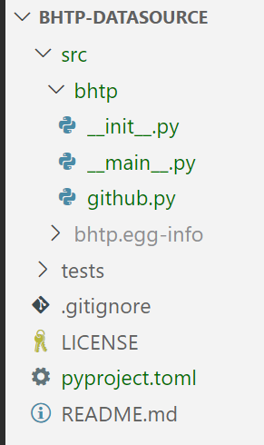

pyproject.toml
- Configuration file used by packaging tools
- Sections, also called tables are represented using square brackets [section name]
- At least 3 sections are required (or recommended) -> [build-system], [project], [tool]
- Python Packaging User Guide
- Setuptools User Guide
Code example
# https://setuptools.pypa.io/en/latest/userguide/pyproject_config.html
[build-system]
requires = ["setuptools", "setuptools-scm"]
build-backend = "setuptools.build_meta"
[project]
name = "snakesay"
version = "1.0.0"
[project.scripts]
snake = "snakesay.__main__:main"
Package file structure
